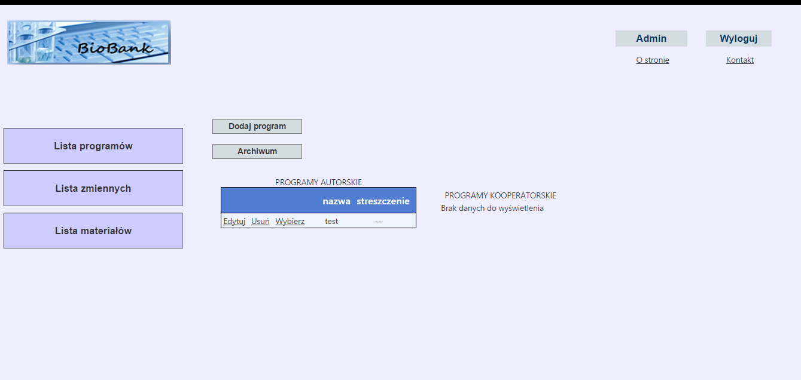

Po poprawnym zalogowaniu jest wyświetlana lista programów użytkownika:

Jest ona podzielona na listę programów autorskich (które stworzył użytkownik), lub listę programów kooperatorskich (których nie stworzył użytkownik, ale w których uczestniczy).
W celu zobaczenia archiwalnych programów, należy kliknąć przycisk Archiwum. W celu dodania nowego programu autorskiego należy kliknąć przycisk Dodaj program. Nie można z poziomu użytkownika dodać programu kooperatorskiego - może to zrobić inny użytkownik dzięki opcji Dodaj użytkownika.
Created with the Personal Edition of HelpNDoc: Free EBook and documentation generator